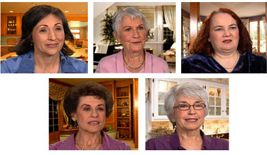

Click on each picture below to view the testimonial.

From Health Care Professionals
From BetterWOMAN users (aged 35 to 78)
From Health Care Professionals
Lawrence Dorman, DO, Applewood Medical Center, Missouri – "The majority of my patients (ranging in age from 37 to 73) have noticed dramatic improvements in their urinary control issues within 4 to 8 weeks of taking BetterWOMAN. One patient has MS with several years of incontinence history. After one bottle, she started to see improvements. Another patient is in a wheel chair due to a rare neuronal disease. Her incontinence symptom was greatly relieved after 60 days. I am very happy with the results."
P. Cutler, MD, PC. Niagara Falls, NY – "I am very happy with the responses from my patients. They are mostly women over 60, and many of them saw improvements within 20 days. One young 28-year-old woman had severe stress urinary incontinence with undetectable health conditions. She did not respond to hormone treatment. I treated her with BetterWOMAN, and her stress incontinence stopped completely within one month."
Gary Kracoff, R.Ph. Johnson Drug, Waltham, MA – "I never realized how big this problem was. We have already had many better women! The majority of the customers start to see improvements within the first 10-20 days. Nearly all customers have continued to use BetterWOMAN. A woman in her 70s told me that she was housebound, and now she can go out and enjoy her life again. What a relief!"
From BetterWOMAN users (aged 37 to 78)
Marian, 60 – a case with over 30 years of bladder control problems. "I started to notice bladder control problems 30 years ago after I had a C-section. Ten years ago, I had a hysterectomy. After that, incontinence became a big problem. I did not know when an accident would happen. I was afraid to go out, even with pads. I started to seek medical treatment about 4 years ago and had been taking medication for 4 years. One drug helped me a bit, but made me very dry. I felt my throat was on fire all the time. My husband saw BetterWOMAN information and bought 3 bottles for me to try. I noticed very obvious improvement within just days. Now I am on my 4th bottle, I am off the medication, and I can go out without being afraid. I am so happy!"
Marian, 44 – a typical case for women after multiple childbirth. "Like many of my girl friends, I started to experience slight urine leakage after I had my second child. After the third child, the situation became more of an issue. I noticed leakage when I sneeze, laugh, or when I get out bed in the morning. Gradually, I also started to notice urgency in urination when I entered into the peri -menopausal phase. I thought this was part of the aging process until I tried BetterWOMAN. It took me a while to notice improvement. In the beginning, I noticed almost nothing. While I was on the third bottle, my urinary urgency greatly improved. On my 4th bottle, I felt I did not have the leakage any more when I laugh or sneeze. I am in my 6th bottle now and I have started to notice an improvement in my libido. It has calmed my peri-menopausal symptoms such as hot flashes and night sweats. I am very happy with BetterWOMAN. I am convinced. I believe in a product that works slowly into my system rather than hormone replacement."
Jennifer – a typical case of women in mid 50s. "I am 54. In the last 6 months my symptoms were a) take a sip of anything and need to go "immediately", which is especially difficult if you are driving! b) Had trouble holding it when trying to find a bathroom fast, c) had to go constantly, d) incontinence when cough or sneeze, e) going 1-3 times during the night. I went into Olivers Market in Cotati and asked the girl in the vitamin department if there was anything to help urinary issues. She recommended BetterWoman. I had immediate results on my first bottle; it helped me to not have to go "immediately", and not so often. It got even better on my second bottle; I am now able to hold it like a normal person and don't need to go as often during the night; have even had nights where I haven't had to go at all. I am about to start my third bottle. I am so glad I found your product."
Jane, 78 – a case with improved bladder control, saved money on diapers, regained confidence. "I used to wet myself almost every time I felt the urge to go to the bathroom. The urine seemed to have its own life and just came down. I hated to be homebound all the time. I hated that this issue dominated my life. But I had no control. I spent an average of $30 monthly on diapers and protective pads. I talked to my girl friends and almost all of them have this problem. My daughter attended a medical conference and she introduced me BetterWOMAN. I noticed big improvement after only TWO bottles—the leakage became much less of an issue. After 3 bottles, the situation is mostly under control. I am overjoyed! I am myself again."
Delsa, 55 – a typical case for women in menopausal phase. "I am a nurse working in an emergency room. It is not easy for me to deal with my urine leakage problem. Whenever I sneezed, coughed or bent, I got wet. I noticed obvious improvements after 2 bottles of BetterWOMAN. Now I very rarely get wet. It's a great product."
Melissa, 50 – a case of improved in urinary urgency. "I had to stop drinking water two days before I visit my dentist because I was afraid of having an 'accident'. I found BetterWOMAN through an online search. After 2 bottles, I noticed big differences. I feel I am a new person now. My confidence has come back."
Cindy, 69 – a case of improved leakage, frequency and regained confidence. "I don't need to think about the location of the next bathroom anymore. I can laugh fully and freely without concern. I've got my dependable body back again! Also, after 6 bottles, I started to notice a sensation of improved libido—a long forgotten feeling. That is really wonderful!"
Maria, 37 – a case of improved frequent urination. "I have had a bladder problem since my second child. For the past year, I had to use the bathroom just about every hour. I hated to spend so much of my life in the bathroom! After taking BetterWOMAN, I can last 4 hours now!"
Dana, 55 – a case of improved urinary frequency and nighttime sleep. "I used to get up 4-5 times a night. I was told it was normal at this age. My friend told me about BetterWOMAN. Now, I rarely get up anymore. I can sleep through most of the night. What a difference with my energy level during the day! I love it."
Joyce, 50 – a case of improved urine leakage and menopausal symptoms. "I just started to enter the peri-menopausal phase. I noticed that I started to get wet sometimes when I laughed very hard. I did not even know that was the early symptoms of stress urinary incontinence. After I tried 2 bottles of BetterWOMAN, not only did the leakage became much less a problem, my menopausal symptoms have improved a lot—much less night sweats and migraines associated with menopause."
Elaine, 74 – improved sexual libido. "I've noticed a wonderful 'side effect' of regularly taking BetterWOMAN – I want to have intercourse with my 84 year old hubby EVERY DAY!" (Her hubby is taking BetterMAN – also by Interceuticals at www.BetterMANnow.com )
Lynn, 52 – improved menopausal symptoms. "After taking BetterWOMAN for 3 months, I noticed the frequency of my night sweats reduced quite a bit. I sleep better and find it much easier to concentrate during the day."
Julie, 37 – improved energy levels. "My energy level has improved a lot. I do not feel tired so frequently. I also lost several extra pounds because now I have the energy to exercise after work!"